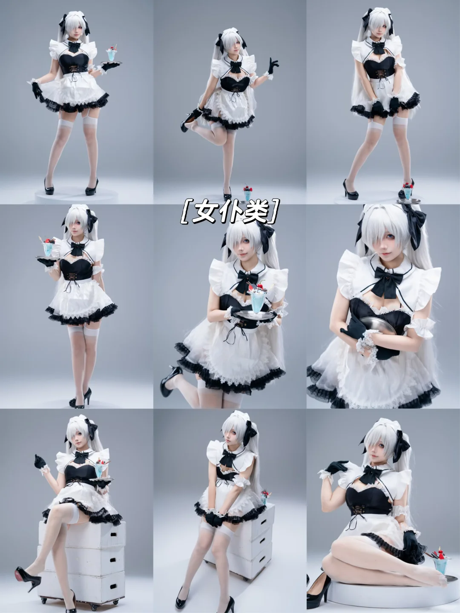
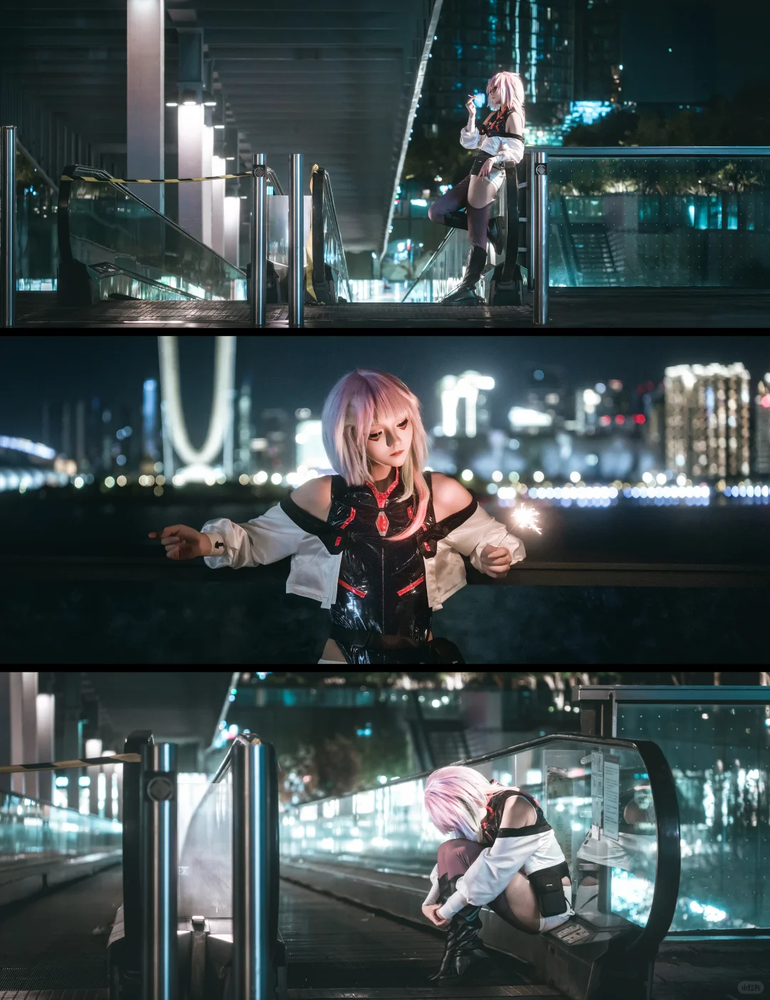
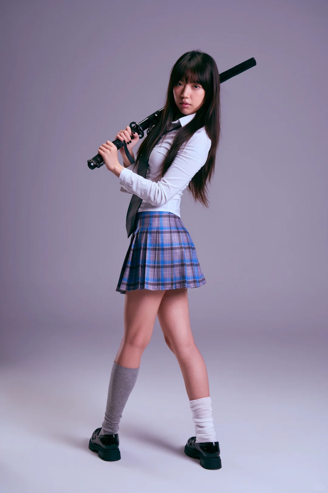
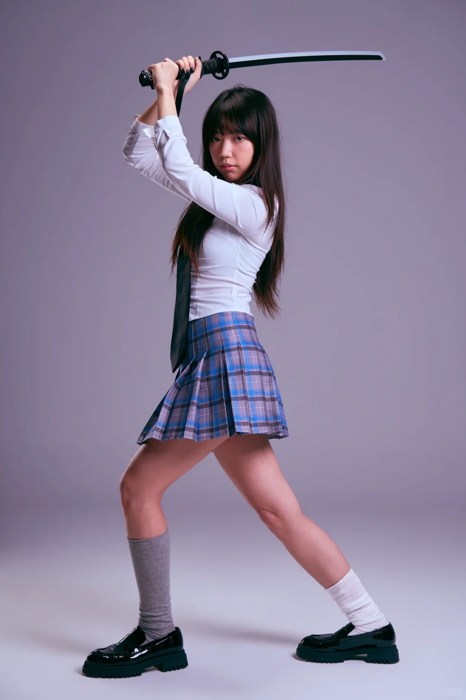
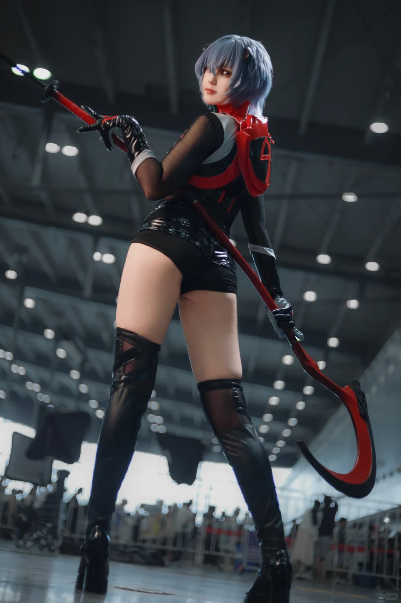

彻底告别“你自然一点、霸气一点”等无效情绪评判。深入 Roberto Valenzuela 完美姿态系统与职业 Cosplay 实战经验，从重心承重、负空间救赎到现场精准解剖指令，重塑实战中的姿态掌控力。
当你回放相机屏幕时，无需逐一核对模特的每根手指。在 1 秒钟内完成以下三个维度的视觉扫描，就能立即定位 90% 的姿态问题：
现象：大臂紧紧压在肋骨两侧，双手收拢在胸腹部正前方。
视觉惩罚：人体原本的腰身内凹曲线被大臂完全填平。整个人横向面积在二维平面上被直接拉宽 20%~30%，观感沉重且畏缩。
现象：四肢全部叠在躯干的主轮廓内部，没有向外舒展的几何斜线。
视觉惩罚：将照片转为纯黑剪影后，观者完全无法辨认角色的动作意图（是在拔剑、防备还是单纯站着）。
现象：双脚平行站立，两腿平均承受重量，双肩双髋水平，脊柱垂直直立。
视觉惩罚：缺乏重力着地感（Grounding），没有动态力矩，宛如没有生命的“兵马俑站姿”。
面对冰冷的相机镜头，人脑会自动激活微弱的防御机制。模特的本能反应是：耸肩、含胸、双臂紧贴肋骨以保护脆弱内脏、下巴本能后缩。这种生理防御在镜头二维投影中会瞬间造成“畏畏缩缩”的视觉印象。
大臂后侧的三头肌与脂肪是柔软组织。当手臂下垂压紧坚硬的胸廓肋骨时，柔软的肌肉如同被压扁的面团，必然向镜头外侧膨胀，使手臂在视觉上凭空增粗 2~3 厘米；同时，手肘将腰部凹陷完全填死，抹杀全身腰线。
当躯干完全正对镜头光轴时，相机会记录下人体横向最大截面积。双肩平直、双髋对称，彻底丢失了三维空间的纵深与立体感。
将 85%~90% 的身体重心转移到其中一条腿（后腿或承重腿）。承重侧骨盆自然向上倾斜并外顶，轻腿微屈，带动脊柱形成优雅有张力的自然 S 弯，肩线随之产生反向高低倾斜。
在任何站姿、坐姿或持物姿态中，主动要求模特将手肘向外拉离躯干至少 3~5 厘米（两指宽至一拳宽）。
一旦手肘拉开两指宽：① 大臂挤压被彻底解除，恢复紧致纵向轮廓；② 手臂与腰部之间重新透出清澈的三角形负空间，让背景光线重新勾勒出腰部内凹线条！
以下均来自我们参考库中的真实高清实拍照片（可清晰观察全身与肢体关节）：




严禁使用“你自然一点”、“别僵硬”、“霸气一点”等情绪毒药。将口令公式化为：
【高效口令】 = 动词 + 身体部位 + 相对方位 + 物理参照物/距离
| 现场问题 | ❌ 低效抽象口令 | ✅ 专业解剖执行口令 |
|---|---|---|
| 大臂夹紧，腰线消失 | “手别贴着，显胖。” | “右手肘向外推开大概一拳的距离，让腰侧透点光出来。” |
| 双腿并立像站军姿 | “站自然点，动一动。” | “把重心全部踩在右脚后跟上，左脚往斜前方挪半步，脚尖虚点地。” |
| 拿长刀无力像拿塑料棒 | “拿刀霸气点，用点力！” | “两脚打开比肩宽一点，膝盖稍微蹲深一指，右手像握小鸟一样轻扶剑柄，剑尖朝我镜头右下角压。” |
| 机械收下巴挤出双下巴 | “低头收下巴！” | “耳朵往天花板拔高一点，下巴往我镜头的方向水平伸出一厘米，眼神继续看我。” |
作者：果果酱啦啦啦 · 分辨率 1080 × 1620 WebP · 真实暗展馆多灯实拍

• 地基与步幅：站距达到肩宽的 1.6 倍，双膝微屈，重心主动压低约 10 公分，形成了极稳固的三角形地基；
• 通透负空间：高位握杆的左手向斜上方伸展，肘部与侧腰拉开巨大的透光空隙，黑色收腰线条完全可读；
• 杠杆对拉：双手拉开约 50 公分间距，构成物理“杠杆对拉支撑”，使超长镰刀看起来轻盈被掌控；
• 头颈延伸：仰拍角度下，下巴向前推送，避免了颈部赘肉堆积。
口令：“左脚再前踏半步做弓步，刀刃往我镜头前送两寸，眼神看我镜头下方！”
✔ 改善：广角近大远小产生极强劈砍视觉冲击。
✘ 牺牲：巨大刀刃可能遮挡顶部背景光与假发细节。
口令：“镰刀尾端顿在地面当支点，身体轻倚在杆上，右手改成两指轻扶，冷眼看我。”
✔ 改善：借由地面支点带来松弛强者感，手指呈现羽毛轻触。
✘ 牺牲：缺少动态斜线冲击，动作趋于静止。
手肘外拉两指至一拳宽即可，过度外抬会显得滑稽凶悍。
下巴水平前推 1~2 厘米足矣，过度前伸在侧面机位会导致驼背观感。
侧转不可遮挡 Cosplay 服装胸口的标志性徽章，拍前需与扮演者确认。
重型造型假发强行扭头易造成假发滑脱或颈部拉伤，以身体微转代替。